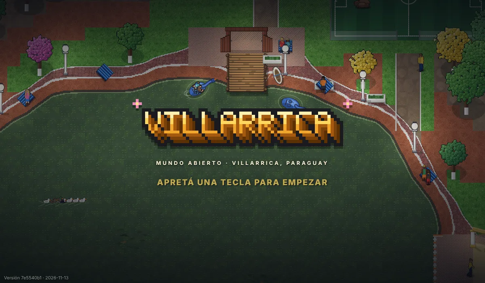

Lo más nuevo
Villarrica
Mundo abierto · vista desde arriba
Un juego de mundo abierto al estilo de los celulares de 2006, ambientado en Villarrica (Paraguay). La ciudad sale de datos reales de OpenStreetMap: calles, plazas, parques, agua y barrios. Arte, código y textos originales.
- 🗺️ Ciudad real
- 🎨 Pixel art
- 🎮 Teclado, táctil o control
- 📲 Instalable